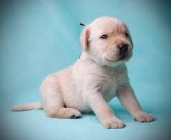
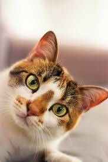
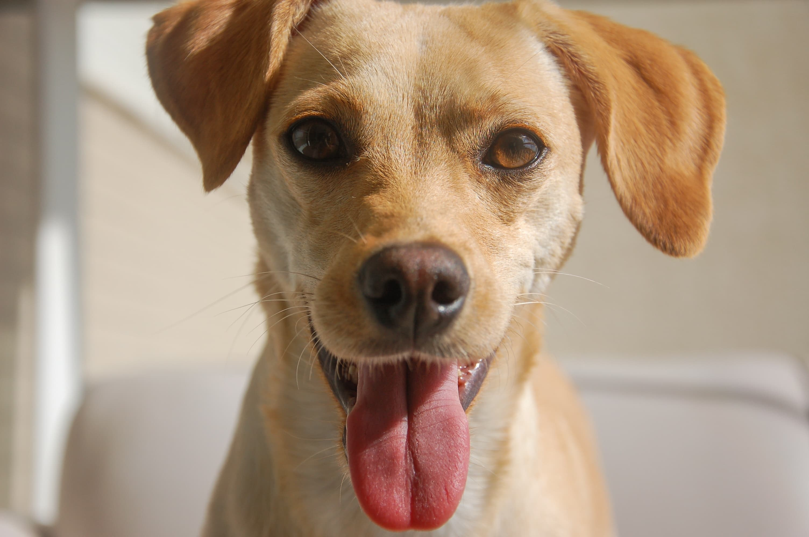
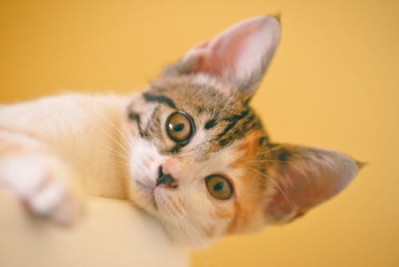
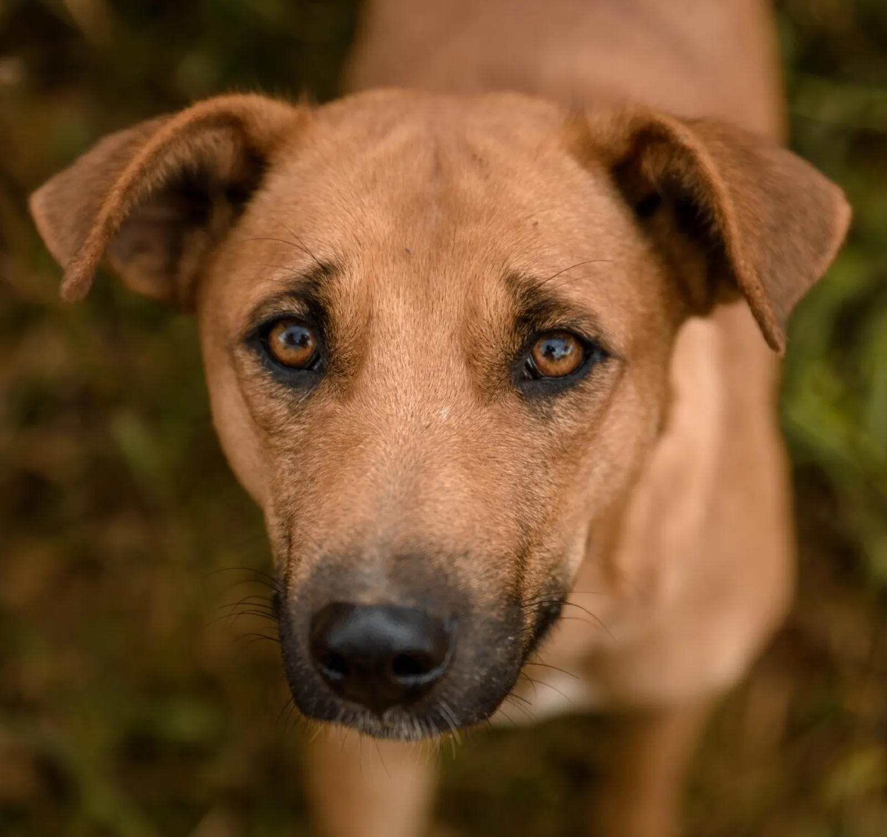
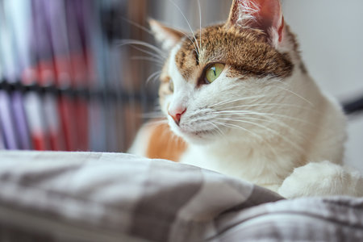

Thor
Castrado
Vacinado
Todos os animais são vacinados, vermifugados e avaliados por veterinário antes da adoção. O processo é gratuito.

Cachorro · Golden Retriever
Adulto · 3 anos
Porte Grande

Gato · SRD
Filhote · 5 meses
Porte Pequeno

Cachorro · SRD
Adulto · 4 anos
Porte Pequeno

Gato · SRD
Sênior · 9 anos
Porte Médio

Cachorro · Border Collie
Filhote · 2 meses
Porte Médio

Gato · Siamês
Adulto · 5 anos
Porte Médio
Muitos outros animais são resgatados diariamente.
Cadastre-se para receber alertas.